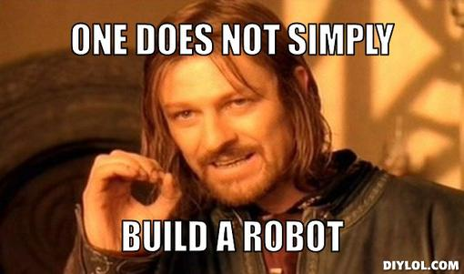

Buildbots Rollout!
The Inner concepts of buildbot
Mark Lakewood. PyCon AU 2013
Who Am I?
Shia needs a Continuous Integration server (CI) server.
Why buildbot?
Why not buildbot?


Installation tips from Shia.
USE A VIRTUALENV!
pip install buildbot
pip install buildbot-slave
pip uninstall sqlalchemy
pip uninstall sqlalchemy-migrate
pip install SQLAlchemy==0.7.9
pip install sqlalchemy-migrate==0.7.2
Buildbot requires sqlalchemy-migrate, buuut sqlalchemy-migrate doesnt work with the latest SQLAlchemy. So you need to downgrade.
File Structure
- master.cfg
- config/
- |- __init__.py
- |- builders.py
- |- buildsteps.py
- |- changesource.py
- |- schedulers.py
- |- slaves.py
- |- status.py
BuildSteps - config/buildsteps.py
BuildSteps - config/buildsteps.py cont.
Typical steps
Builders - config/builders.py
BuilderConfig(name="12.04-" + name,
slavenames=['slave'], slavebuilddir=build_dir,
factory=buildsteps.get_buildsteps(build_dir + "/build")))
ChangeSources - config/changesource.py
def get_source():
return GitPoller("https://github.com/mlakewood/Buildbot-rollout.git",
branch="master",
pollinterval=10)
Schedulers - config/changesource.py
quick = SingleBranchScheduler(name='quick',
branch='master',
treeStableTimer=60,
builderNames=["12.04-" + build])
Slaves - config/slaves.py
BuildSlave("slave", "pass")
Status - config/status.py
web = html.WebStatus(http_port=8010, authz=authz_cfg))
mn = MailNotifier(fromaddr="buildbot@rollout.com",
sendToInterestedUsers=False, mode='all',
extraRecipients=['dev@rollout.com'],
useTls=True, relayhost="smtp.gmail.com", smtpPort=587,
smtpUser="dev@rollout.com", smtpPassword="rollout")

Master.cfg - master.cfg
BuildmasterConfig = {
'slaves': slaves.get_slaves(),
'schedulers': schedulers.get_schedulers('rollout-build'),
'builders': builders.get_builders("rollout-build",
"/Users/mlakewood/Documents/Programming/buildbot-talk/rollout-slave"),
'status': status.get_status(),
'slavePortnum': 9989,
'change_source': changesource.get_source(),
'title': 'rollout BuildBot',
'buildbotURL': 'http://buildbot.rollout.com:8010/',
'db_url': 'sqlite:///state.sqlite',
}
Starterrrr up!
$:buildbot create rollout-master
$:buildslave create rollout-slave
$:cd rollout-master
$:buildbot start
$:cd ../rollout-slave
$:buildslave start
Starterrrr up!
$:buildbot create rollout-master
$:buildslave create rollout-slave
$:cd rollout-master
$:buildbot start
$:cd ../rollout-slave
$:buildslave start